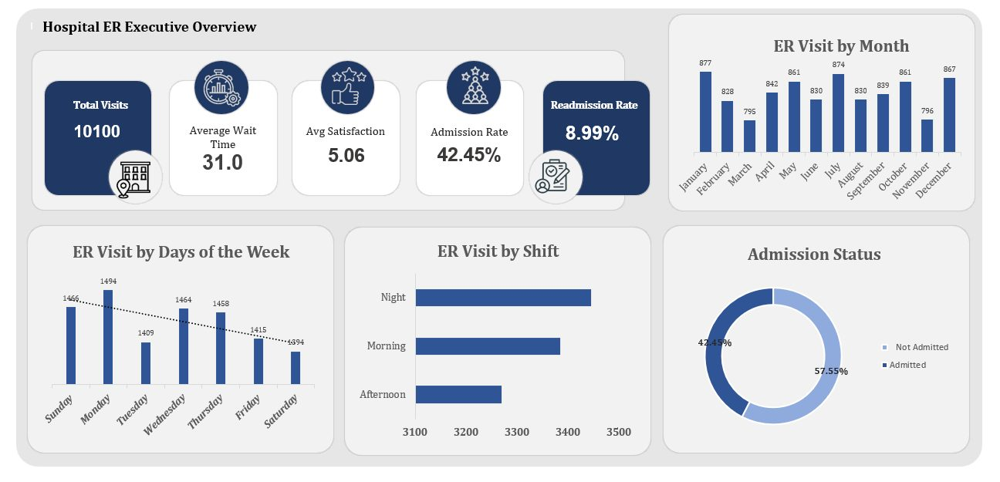
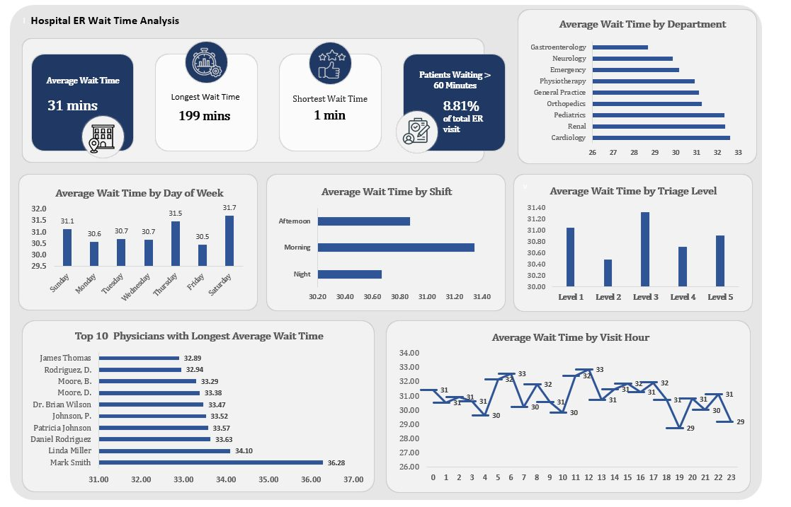
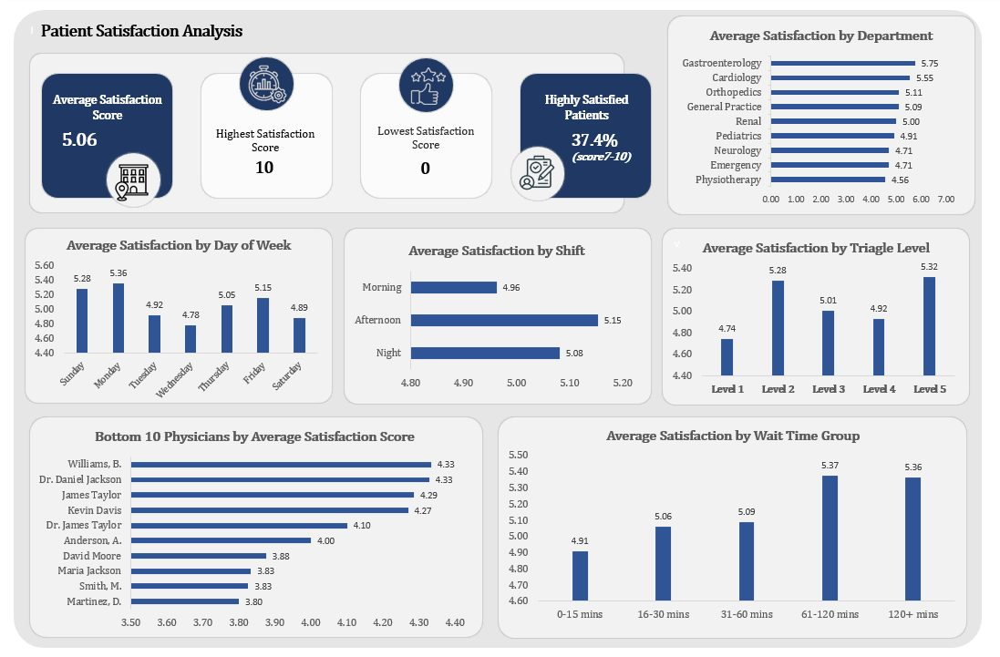
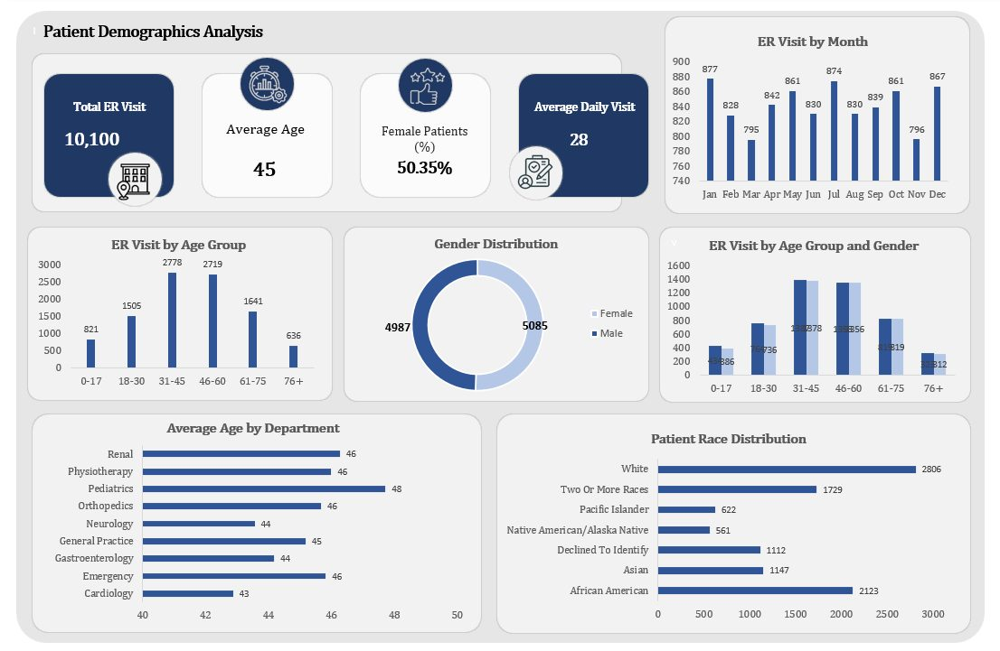

Case study 04
Emergency departments live or die on throughput: how long patients wait, who gets admitted, and which departments carry the load. The question here: what do admissions, wait patterns, and departmental referrals reveal about where an ER's operational pressure sits, and where would a manager intervene first?
The raw records were cleaned and shaped in Power Query, then audited before analysis: the data audit report documents the quality checks, assumptions, and exclusions made before a single chart was built. The interactive Excel dashboard tracks admission status, wait time patterns, patient demographics, and departmental referral load, and the executive summary walks a non-technical reader from the business question to three findings and recommendations. Hospital audit report · exec summary
Most portfolio dashboards skip straight to visuals. This project publishes its audit trail: what was checked, what was excluded, and why, so every downstream figure has a documented basis. Hospital audit report
The dashboard tracks a 42.45% admission rate and 8.99% readmission rate, and isolates the 8.81% of visits waiting over 60 minutes, then breaks that tail down by department, shift, triage level, and hour so a manager can see where the queue actually forms. Hospital dashboard · Wait Time page
Wait times, admission mix, and departmental load are operational KPIs, not revenue ones. The project demonstrates the same question-to-recommendation discipline applied to a healthcare operations setting. Hospital exec summary



